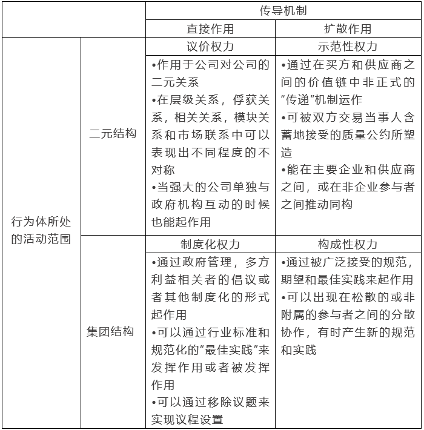
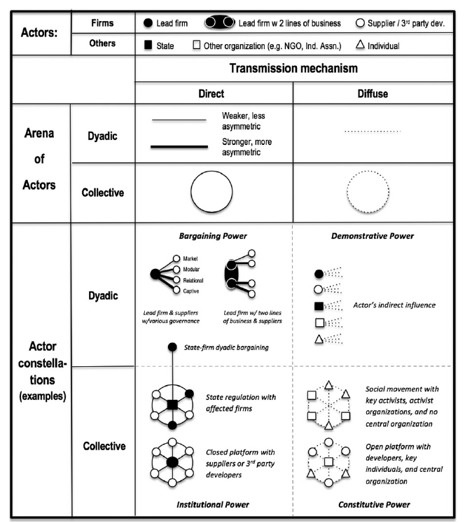

收录于合集

作品简介
【作者】 Mark P. Dallas, 联合学院政治科学副教授，亚洲研究主任，研究领域为比较与国际政治经济学、中国研究、经济与政治发展研究等。Stefano Ponte，国际政治经济学教授，哥本哈根商学院商业和发展研究中心主任 研究领域为国际政治经济，全球价值链和生产网络等。Timothy J. Sturgeon，麻省理工学院工业性能中心高级研究员，研究领域为全球化，全球价值链，数字经济等。
【编译】 梁坤（国政学人编译员 华威大学国际政治经济学硕士生）
【校对】 丁伟航 樊华
【审核】 李雯珲
【排版】 秦子宁
【美编 】聂涵琳
【来源】 Dallas, M. P., Ponte, S., & Sturgeon, T. J. (2019). “Power in global value chains”. Review of International Political Economy , 26(4), 666-694.
期刊简介
Review of International Political Economy, 《国际政治经济学评论》，创立于1994年，是一本以国际政治经济学为主要内容的同行学术评审杂志。2019-2020年的影响因子为3.610。
全球价值链中的权力
Power in global value chains
Mark P. Dallas
Stefano Ponte
Timothy J. Sturgeon
推荐语
全球价值链（Global Value Chain，GVC）已成为世界经济大循环中的一个显著特征。本文提出的分析框架描述了全球生产链中企业、政府、非政府组织等多个行为体之间的权力关系，给全球生产链研究提供了新视角。当前全球经济中，保护主义威胁着全球价值链的稳定，理清全球价值链中的权力关系具有很强的现实意义。
内容提要
权力一直是全球价值链（global value chain，GVC）研究的基础概念。但是，在大多数研究中，没有明确定义权力，而是将权力作为一个单一的概念而不是具有多个维度的复合概念。近年来，随着全球价值链的研究范围超越了交易公司或公司与国家之间的联系，纳入了其他利益相关者和机制，例如非政府组织、工会、标准、规范和公约，澄清权力的概念变得尤为迫切。在本文中，作者们针对全球价值链治理中权力的各种含义和用法提出了一种类型学分析框架。他们主要描述了 两个维度：传导机制——直接作用和扩散作用；行为体所处的活动范围——二元结构和集团结构。 将两个维度中的不同指标结合起来会产生 四种理想的权力类型：议价权力，示范性权力，制度化权力和构成性权力。 作者们简要介绍了这四种类型的权力并用葡萄酒、服装和手机行业的案例做了经验分析，为该领域的进一步研究提供了议程。
1.导论
已有的全球价值链的文献拓展了权力的概念，基于对这些概念的总结，本文提出了一个涵盖权力各种意义的类型学分析框架。这个框架有 两个维度：行为体所处的活动范围 （二元结构和集团结构）和 权力的传导机制 （直接作用和扩散作用）。两个维度上不同指标的组合对应了 四种主要的权力形式：议价权力 （二元结构和直接作用）； 示范性权力 （二元结构和扩散作用）； 制度化权力 （集团结构和直接作用）； 结构性权力 （集团结构和扩散作用）。这个分析框架明确地反映了参与者的类别，参与者之间的相互作用，以及存在于全球价值链上的权力关系的类型。
2.权力与全球价值链管理
权力概念一直是全球价值链分析的核心。它的含义已经从仅限于代理- 中心关系中的直接作用的和强制的关系模式拓展到治理模式。在治理模式中，代理关系不甚明确，而且权力关系也更为分散。
2.1全球价值链中权力概念的历史
在传统的全球价值链治理理论中，权力主要存在于主导企业。主导企业能够通过买方权力决定全球价值链中的职能分工，主导企业在供应商之间选择和转换的能力使他们能够要求供应商提供额外的服务并且从供应商那里获得更低的单位价格。2005年之后，全球价值链文献中出现了几种在全球价值链中获取权力的新方法。第一种名为“规范治理”，它涉及重新调整给定实践以使其与标准或规范兼容的过程。第二类研究表明，全球价值链治理不仅可以通过领先企业和强大供应商的战略选择来塑造，还可以通过质量和可持续性、多方利益相关者的倡议、企业社会责任和社会运动方面的标准和认证来塑造。第三类突出了全球价值链治理中的分离和反作用过程。这些研究表明，实力较弱的参与者有时能够摆脱不平衡和剥削的全球价值链的关系，或者拒绝进入全球价值链。另外一些关于全球生产网络的文献关注的是更为复杂的经济活动配置，而不是此前的全球价值链治理理论中被采用被简化过的配置。在此过程中，它突出了塑造经济活动组织的非企业行为者的多样性。
全球价值链治理发生了从单极治理到多极化治理的转变。由此，诸如国际非政府组织、工会、政府和多方利益相关者倡议等价值链之外的行为体也能参与到全球价值链的治理中来。
2.2权力理论与全球价值链理论之间的相似之处
作者认为尽管权力概念是有争议的，但是可以通过 强制、议程设置、偏好塑造和社会建构 等四个方面来更好地理解全球价值链中的权力概念。
2.2.1强制性权力
行为者利用权力来进行有意采取的行动，以实现明确定义的结果，其中公开的行为通常是可观察到的权力表现。这与全球价值链的研究十分相似，其研究重点是“驱动”和“联系”的治理，而且存在于全球生产网络中的权力主要是强制性的。
2.2.2议程设置权力
权力并不只有在决策过程中存在明显冲突时才会出现，当行动者成功地将有争议的问题从决策领域中移除时，权力也会发挥作用，这被称为议程设置权力。
2.2.3偏好塑造权力
强者能够通过塑造自己的偏好来支配弱者，以符合强者的利益。在全球价值链的治理中，主导治理过程的行为体也能他们的一些治理方式“常态化”，并使得这些方式成为治理标准。
2.2.4社会建构权力
权力也能通过社会化过程，通过惯例和实践表现出来。这些惯例和实践会约束行动者的行事方式，以使其符合规范。
3.全球价值链中的权力维度和类型
3.1全球价值链中的两个维度

表1（翻译自原文图表，p673）
表1展示了与全球价值链分析相关的权力的两个维度：“传导机制”和“行为体所处的范围”。传导机制详细说明了权力如何在行为体之间有意或者无意被传导。行为体的活动范围说明了行为体所处的权力传导结构，这种结构大致分为二元结构和集团结构两种类型。二元结构指的是在全球价值链中仅有两个参与者，集团结构表示有两个以上的参与者。这两个维度内不同指标的组合四种权力类型的类型(见表1)：议价权力、示范性权力、制度化权力和构成性权力。
3.1.1权力的传导机制：从直接作用到扩散作用
作者们认为，当掌握权力的行为体和作为权力对象的人相对容易地被各方识别时，权力就会发生直接传导。 直接权力的施加通常是有意的，而强大的行为体的目标通常更为明确。直接权力通常也存在于行为者或集体（包括国家）内部。
权力的传导机制也可以是扩散性的。 当行为体遵循广泛的社会趋势时，扩散性权力就能够通过网络或示范效应，或通过涌现的“最佳实践”和主导的质量约定进行传导。此外，当规范被“自然化”时，它们会被视为一种理所当然的状态，这使得权力被嵌入行为体的世界观中，而其他行为体也不会试图去抵抗。
扩散传播通常是一种逐渐进化变化的功能，它慢慢地常态化和嵌入到行为体的惯例、实践和信仰中。 在全球价值链的研究中，这种动态变化可以出现在标准、惯例、最佳实践的创建和传播(或消亡)中，也可以出现在技术或商业模式扩散的前聚合阶段的集体潮流中。但是，作者们指出，权力的扩散传播很难通过经验观察到，尽管扩散的权力确实隐含在各种社会变革理论中，并且出现在社会运动和行为者集团内部。
总而言之，虽然直接传播和扩散传播并不总是泾渭分明的二分，但它们可以通过几个维度加以区分，包括:(1)行动者彼此识别的清晰程度;(2)行为的意向性和目标定向程度;(3)权力是否存在于被明确界定的行动者之中;(4)评估和制裁制度的相对明确性和有效性。
3.1.2 行为体所处的活动范围：从二元结构到集团结构
全球价值链中权力类型学分析框架的第二个维度是“行为体所处的活动范围”。一个“活动范围”是指位于某个特定全球价值链内或与之相互作用的所有行为体的集合。这种活动范围主要有两种类型： 二元结构和集团结构 。二元结构描述的领先企业与其供应商或者中间人的关系，在该结构中，权力不对称的情况会随着双方关系从等级关系模式向市场联系模式的转变而降低。
在集团结构中，权力的大小是多个参与者同时有意或无意行动的集体行为所决定的。 虽然一个集体可能看起来是一个具有一致规则、领导或组织的单一行动者，但它也可能是通过松散的协调而组织起来的。
3.2 全球价值链中的四种权力类型
这四种类型的权力并不是相互排斥的，而且通常是共存的。 它们会随着时间的推移，以复杂的方式混合、分层和组合 。一种权力可能会派生或依赖于另一种类型，一种类型的权力也可以转化为另一种类型，例如，当模糊定义的最佳实践作为一种事实上的标准被编成法典时，集体内部的权力作用方式会从扩散作用转变为直接作用，权力类型因此而改变。
3.2.1 议价权力
二元结构与直接作用模式组合产生议价权力。 全球价值链中的议价能力通常指企业对企业的关系，是文献中发现的最常见的权力形式。议价权力可以建立在其他形式的权力之上，并与之分层合并。
3.2.2示范性权力
二元结构和扩散性模式产生示范性权力。 示范性权力通过价值链上的非正式传导机制在买家和供应商之间运作。此外，在一个价值链节点上的活动也会对整个价值链产生示范效应，甚至对邻近的行业也会产生示范效应。示范性权力也可以逐渐演变为构成性权力。
3.2.3制度化权力
集团结构和直接作用模式产生制度化权力。 制度化权力是集体与某种程度的正式组织(如商业协会、多方利益相关者倡议、技术平台或国家行政单位)共同行使的一种直接权力形式。技术平台的网络效应衍生出一种不那么直观的制度力量形式。但随着正式制度化程度的减弱，制度化权力转变为构成性权力。
3.2.4构成性权力
集团结构和扩散性作用模式产生构成性权力。 当集团结构中没有明确的或完全的共同成员关系时，构成性权力就表现出来。权力并不体现在特定的行动者或机构中，权力的行使和结果可能完全是无意的。随着时间的推移，构成性权力可以越来越形式化和法典化，从而演变为制度化权力。
4.经验事实

图1 （引自原文第681页）
上图用符号展示了全球价值链中的权力类型。它包含了三种类型的企业参与者:单业务线的主导公司、供应商和第三方开发者，以及拥有两条及以上业务线的主导公司。此外，该图还包含了其他行动者，包括国家、组织(如非政府组织和行业协会)和个人。集体用圆圈来表示，圆圈可以容纳任意数量的参与者。权力的直接作用方式用实线表示，扩散作用方式用虚线表示。在这两种情况下，较粗的线条表示权力不对称程度较高。基于上述框架，文章探讨了三个案例。第一个案例展示了葡萄酒行业中，由质量观念和可操作性的变化而引起的权力转移。第二个案例展现了在服装行业中劳工标准的发展。第三个案例研究了搭载不同操作系统的手机，以强调“基于平台的”集合体的不同类型。
4.1葡萄酒全球价值链中的权力
传统上，根据葡萄酒质量的不同，议价能力集中在低端市场的买家手中，而生产商可以在高端市场行使更大的权力。然而，随着越来越多的葡萄酒通过零售商销售，而不是通过专营店，议价能力正在巩固在买家手中。葡萄酒全球价值链中的示范力量传统上是由“旧世界”(法国、意大利、西班牙和葡萄牙)一些顶级地区的精英葡萄酒生产商塑造的。然而，随着“新葡萄酒消费者”理念的逐渐产生，示范力量已经发生了根本性的转变，现在正越来越多地通过品酒师/评分者、葡萄栽培者和营销人员等传播。这些角色逐渐塑造了“新的”葡萄酒风格和审美偏好。示范效应已经从生产者驱动转向需求驱动——这导致了议价能力向大规模、多样化的葡萄酒买家转移的趋势。
4.2服装全球价值链中的权力
在服装价值链中，随着时间的流逝，各种形式的权力的相互作用和演变都在创建多方利益相关方倡议（multi-stakeholder initiatives）时进行，这些倡议产生并散布了劳工标准。在被正式纳入倡议之前，通过提高松散连接的非政府组织共同体（包括消费者团体，学生团体，和工会等）对于血汗工厂的抵制意识，全球劳工标准得到了提高。通过像多方利益相关方倡议的制度化权力，广泛的运动对企业与全球买家之间的议价能力产生了影响，迫使企业遵守多方利益相关协议。
4.3移动通信全球价值链中的权力
手机产业的发展已经从“功能手机”时代传统的企业间议价能力迅速演变为“智能手机”时代与基于平台的制度力量重叠。功能机时代，各厂商的综合设计能力和组件采购能力构成其议价能力的核心。但是，随着智能手机的崛起，平台（如Android, iOS等等）的制度力量成为手机的核心。
5.结论
作者们认为该研究框架作者认为在今后的研究中仍有几个挑战有待解决。
第一，不同的权力类型之间可能会发生转化，这导致在实践中，如何对权力关系进行准确的界定是一个挑战。
第二，不能仅仅将企业视为一个单一的行为体，而需要将 企业本身具有的复杂结构 纳入研究范围，以具体说明企业各部门在什么情况下能够联合并成为一个统一的行为体。这有助于促进对全球价值链上的权力的理解。
第三，不同的权力经常被同时表达出来。具体来说，一种权力经常会与另外一种权力发生重叠或者一种权力加强了另外一种权力的表达。这增加了研究的复杂性。
第四，行为体的舞台和权力的传递方式会 随着时间的推移而发生变化。 这引发了一系列的问题。比如，什么时候某些类型的权力有可能巩固价值链中的其他力量？或者在新的权力组合中相互加强？
译者评述
“全球价值链”的概念起源于学者对“企业价值链”概念的改造。20世纪80年代，迈克尔·波特提出了价值链理论，他把企业经营整体经营过程分解为不同的、具体的环节。这些单独的环节在企业价值创造过程中是密不可分的、相互联系的。因此，企业价值创造的经营链条，即企业内部价值链诞生了。而单个企业不是独立的，它与其他经济行为体有着千丝万缕的关系，他们都存在于一个整体的价值体系中。企业间的关系构成了企业外部的价值链条。格里芬最早提出了全球价值链一词，他认为全球价值链涉及到了原材料采购和运输、成品和半成品的生产和销售、最终消费等整个过程。
基于格里芬对全球价值链的定义，作者们剖析了全球价值链之中的权力的概念，指出了其丰富的内涵。通过将研究对象的范围从单一的公司间关系拓展到包含国家、国际组织、社会运动等行为体在内的一个更广阔的范围，作者们提出的研究框架使得全球价值链研究与全球秩序的研究产生了更多的交集。考克斯在《生产，权力和世界秩序》中提到生产与霸权之间的关系。考克斯认为霸权是建立在国家的国际化的基础之上，除了国家在政治方面的努力（例如签订自由贸易协定等等），生产的国际化以及生产国际化所动员起来的社会力量也对霸权的建立至关重要。各国在参与生产活动中建立起了适应世界经济结构的本国经济结构，同时认同霸权所建立的国际经济规则。从某种程度上来说，各国经济被嵌入到一个以霸权国为主导的世界经济结构中。
在这个结构中，资本、原料和技术的跨境流动是构成生产国际化的基础，如果政府通过政治力量限制了这些要素的自由流动，那么跨国生产活动就会受到影响。考虑到生产活动对国家间关系产生的重要的影响，这就使得全球经济结构中的强大国家也能通过影响生产活动来实施对其他国家的影响。这进而引发了国家关于自身的产业安全的担忧。以我国为例，作为世界工厂的中国在全球价值链分工中往往处于组装和制造环节，由于缺乏领先的技术，我国企业在一些产品的生产上过于依赖来自国外的技术，尤其是来自美国的高新技术。当中美关系恶化的时候，美国政府在技术流动和产品流动上的限制，使得我国的相关产业受到严重的影响。这一点在美国限制华为公司获取芯片的案例中表现得尤为明显。
因此，在生产全球化的背景下，我国一方面需要合理利用全球生产分工，实现自身利益最大化；另一方面需要考虑的是如何保证自身的经济安全。从这个意义上讲，全球价值链研究对我国的对内经济政策和对外经济政策都有重大的影响。
参考文献
1.Cox, Robert W., Production, power, and world order: Social forces in the making of history , New York: Columbia University Press, 1987.
2. Blanchard, Emily J., Chad P. Bown, and Robert C. Johnson. Global supply chains and trade policy , The World Bank, 2016.
3. Gereffi, G., Humphrey, J., & Sturgeon, T., The governance of global value chains , Review of international political economy, 2005.
4.韩冲，屈熠：《全球价值链分工对中国产业安全的威胁》，载《现代管理科学》, 2015年第5期。
文章观点不代表本平台观点，本平台评译分享的文章均出于专业学习之用, 不以任何盈利为目的，内容主要呈现对原文的介绍，原文内容请通过各高校购买的数据库自行下载
**
**
**
**
**
**
添加 “国小政”微信
获取最新资讯


国政学人
支持学术公益与知识传播
微信扫一扫赞赏作者 __赞赏
已喜欢，对作者说句悄悄话
取消 __
发送给作者
发送
最多40字，当前共字
上一页 1/3 下一页
长按二维码向我转账
支持学术公益与知识传播
受苹果公司新规定影响，微信 iOS 版的赞赏功能被关闭，可通过二维码转账支持公众号。